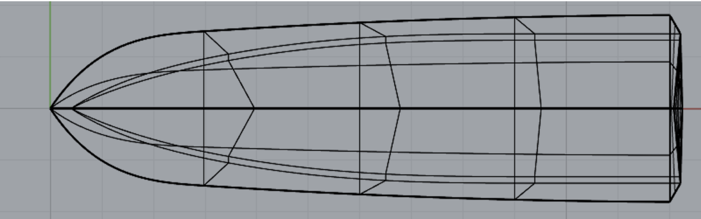
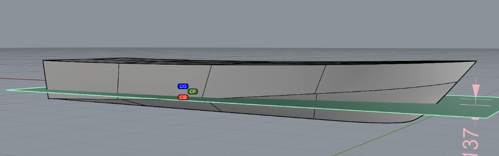
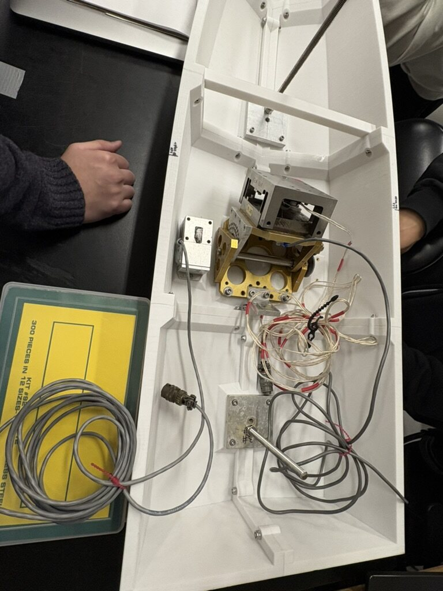
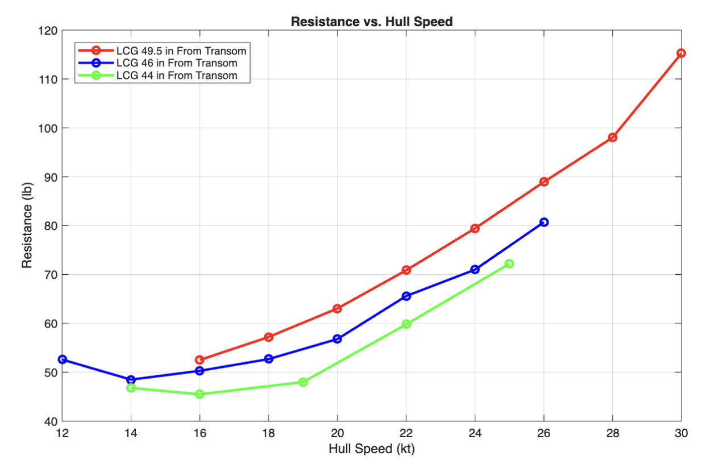
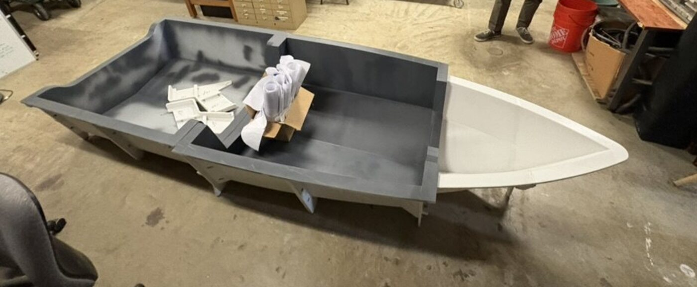
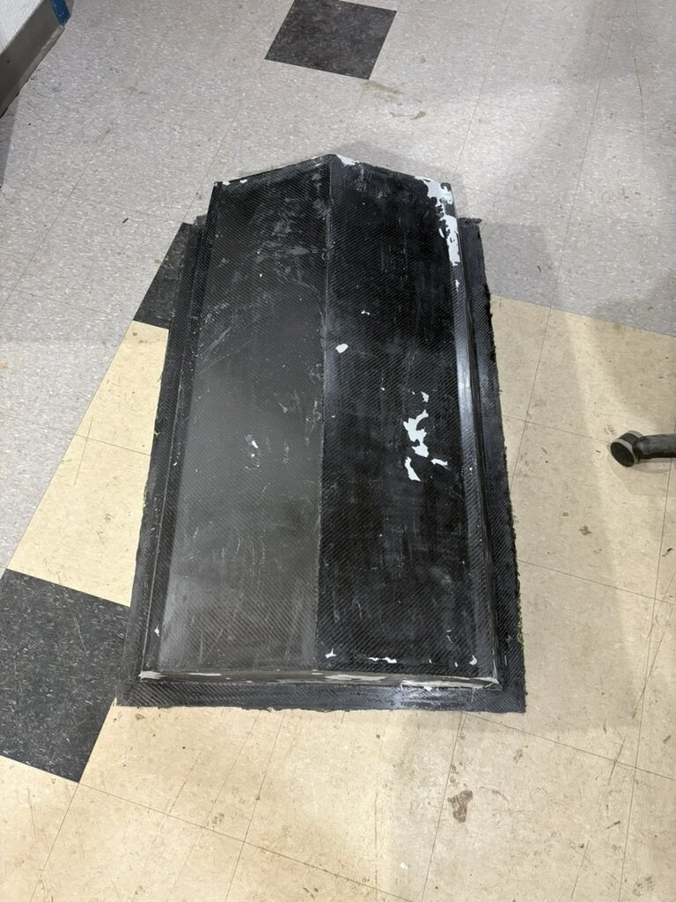

Senior Capstone (MEC 440/441) · Sep 2025 – May 2026
Hull Design
Key Skills
- Mechanical Design
- Hydrodynamic Analysis
- Composite Manufacturing
- 3D Printing
- Experimental Testing
Senior Capstone (MEC 440/441) · Sep 2025 – May 2026
Key Skills
A 5-person senior capstone team designed and built a modular, 3D-printed mold for a carbon fiber planing hull for the Stony Brook Solar Racing Team's boat. The hull was modeled and analyzed for resistance, then validated by tow-tank testing a scale model. I owned the mold design directly: geometry, module joints, and vacuum system sizing.
Owned the mold design concept (positive mold, top/bottom geometry), ran two rounds of mold geometry optimization, redesigned the module joints, and calculated the vacuum pump specification for the resin infusion process.
The team modeled the hull in Rhino3D and used Orca3D's planing-hull tools (Savitsky method) to predict resistance across speed and loading condition, then validated those predictions against physical testing: a ⅓-scale model in the tow tank at Stevens Institute of Technology, with three different center-of-gravity positions to see how load distribution affects resistance.


The scale model was instrumented and run through the tow tank at Stevens Institute of Technology to validate the Orca3D resistance predictions against physical data.


The core design problem I owned: the full-scale mold is too large to move through a standard doorway or elevator in one piece. I designed it as a 3-section positive mold (bow, midsection, and aft) with flanged joints between sections so each piece could be handled independently and the whole thing reassembled on site. Getting the joints right took two full redesign iterations to balance sealing, alignment, and print time.
The mold sections were 3D printed at scale, then carbon fiber was laid over the mold and infused with resin under vacuum to form the hull skin. I calculated the vacuum pump sizing for that process.

